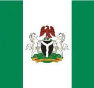

About Me
My name is Justice Chinwike Stephen. I was born and brougth up in Delta State, Nigeria, West Africa, my family and I lives in Nigeria. I am currently not employed, but I am hoping to be employed some day before the end of my degree programe. I am single, but hope to get married as soon as I'm employed.
Delta State, Nigeria

Official flag of Nigeria
Nigeria, an African country on the Gulf of Guinea, has many natural landmarks and wildlife reserves. Protected areas such as Cross River National Park and Yankari National Park have waterfalls, dense rainforest, savanna and rare primate habitats. One of the most recognizable sites is Zuma Rock, a 725m-tall monolith outside the capital of Abuja that’s pictured on the national currency.